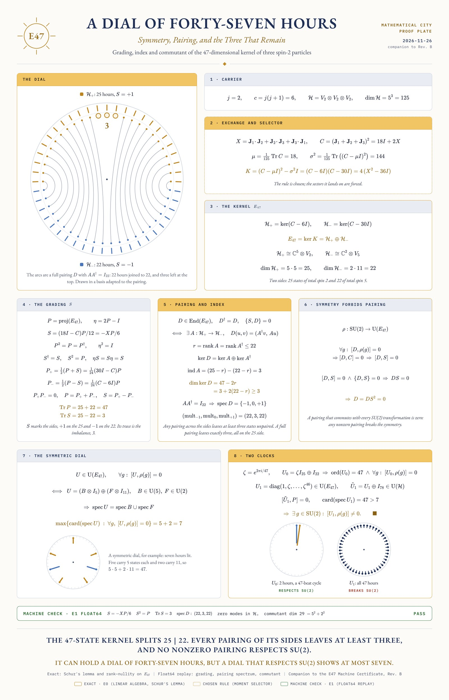
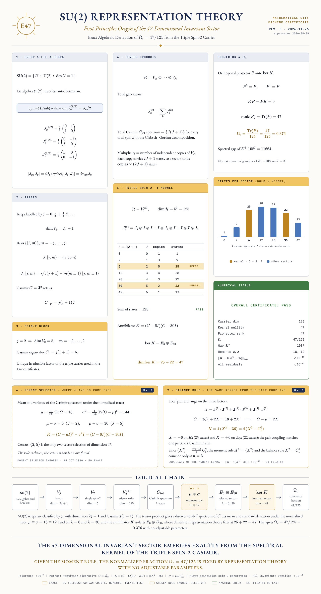

01Instrument
The dial
Each mark on the rim is one of 47 hours. In the grading and pairing views a mark is a state: gold for the 25 states of total spin 2 (S = +1), blue for the 22 of total spin 5 (S = −1). In the clock views a mark is a phase, and a lit spoke is an hour the clock shows, longer when more states share it.
02Proofexact, eight steps
The proof
1 · Carrierj = 2, c = j(j + 1) = 6, ℋ = V₂ ⊗ V₂ ⊗ V₂, dim ℋ = 5³ = 125
2 · ExchangeX = J₁·J₂ + J₂·J₃ + J₃·J₁, C = (J₁ + J₂ + J₃)² = 18I + 2X; μ = Tr C/125 = 18, σ² = Tr((C − μI)²)/125 = 144; K = (C − μI)² − σ²I = (C − 6I)(C − 30I) = 4(X² − 36I)
The moment rule is chosen; the sectors it lands on are forced.
3 · Kernelℋ₊ = ker(C − 6I) ≅ ℂ⁵ ⊗ V₂ (25), ℋ₋ = ker(C − 30I) ≅ ℂ² ⊗ V₅ (22), E₄₇ = ker K = ℋ₊ ⊕ ℋ₋
4 · GradingP = proj(E₄₇), η = 2P − I, S = (18I − C)P/12 = −XP/6; S² = P, ηS = Sη = S; P₊ = (P + S)/2 = (30I − C)P/24, P₋ = (P − S)/2 = (C − 6I)P/24; Tr P = 47, Tr S = 3
5 · PairingD† = D, {S, D} = 0 ⇔ D(u, v) = (A†v, Au), A : ℋ₊ → ℋ₋; ker D = ker A ⊕ ker A†; ind A = (25 − r) − (22 − r) = 3; dim ker D = 47 − 2r = 3 + 2(22 − r) ≥ 3
AA† = I₂₂ gives spec D = {−1, 0, +1} with multiplicities 22, 3, 22.
6 · Symmetry forbids pairing∀g, [D, ρ(g)] = 0 ⇒ [D, C] = 0 ⇒ [D, S] = 0; with {D, S} = 0 this gives DS = 0, so D = DS² = 0
7 · Symmetric dial∀g, [U, ρ(g)] = 0 ⇔ U = (B ⊗ I₅) ⊕ (F ⊗ I₁₁), B ∈ U(5), F ∈ U(2) ⇒ spec U = spec B ∪ spec F, at most 5 + 2 = 7 hours
8 · Two clocksζ = e2πi/47: U₀ = ζI₂₅ ⊕ I₂₂ has order 47 and commutes with SU(2); U₁ = diag(1, ζ, …, ζ⁴⁶) keeps E₄₇ but shows 47 > 7 hours, so some [U₁, ρ(g)] ≠ 0. ∎
03Wiring
How the dial meets the Quantum Clock
HandThe clock’s hand is the grading. On E₄₇ the linear clock is f(C)P = ω(¾P − ½S), so its tick is generated by S; one 1/47 turn is U₀ up to a global phase. The Quantum Clock is a symmetric dial with two hours and a 47-beat cycle.
Certificate check D10 · the clock · engine/node.js, f = ωC/24
Prime clockThe prime 47-cycle U₄₇ shows all 47 hours, so by step 7 it cannot commute with SU(2), whatever basis and phase origin are declared for it. It also crosses the grading: its hand walks from the 25 into the 22 and back.
Certificate check D11 · the formalism · engine/clocks.js, primeClock
Design forkThe clock page lists “SU(2)-covariant versus full 47-state clocks” as open. Read as commuting with every SU(2) rotation, the fork is forced: such a clock shows at most seven hours, and a 47-hour clock must break the symmetry.
TowerThe same grading lives on every Fibonacci–Lucas carrier. Its index is Fk² − Fk−2Lk = Fk−3Fk−1, and spin 2 is the first carrier where the index is nonzero.
Index of the grading along the Fibonacci–Lucas tower
| k | spin j | spin J | dim ℋ₊ | dim ℋ₋ | kernel | carrier | index Tr S |
|---|
04CertificateMC-E47-DIAL-20261126-001
Every check, recomputed now
These checks run on the Quantum Clock’s own engine in your browser and in GitHub Actions. An independent NumPy replay checks the same claims, plus the 29-dimensional commutant, and records them in dial_data.json.
| ID | Check | Evidence | Residual or value | Result |
|---|---|---|---|---|
| Running… | ||||
node --test tests/dial.test.js # the 12 checks, on the clock's engine python dial/verify_dial.py # independent NumPy replay, against dial_data.json
05Plateslight house style
The plates




06Evidence boundary
What is proved, what is computed, what is not claimed
E0 exact
- The grading, its trace 3, and the index of every pairing (rank–nullity on 25 + 22).
- No nonzero pairing commutes with SU(2); a symmetric dial shows at most seven hours (Schur’s lemma).
- The index along the tower, Fk−3Fk−1, by integer arithmetic.
E1 executable
- Twelve checks on the clock’s engine, in the browser and in Actions; residuals near 10⁻¹⁴.
- An independent NumPy replay, including the commutant M₅ ⊕ M₂ of dimension 29.
Not claimed
- The arcs draw one pairing in a basis adapted to it; they are a picture of the algebra, not a preferred pairing.
- “Hours” are distinct eigenvalues of a unitary on E₄₇. No physical identification of the dial is claimed.